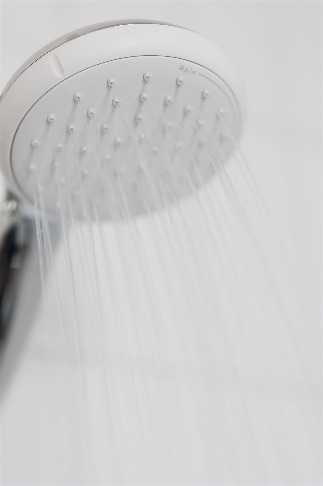

Particuliers
Un antitartre ou un adoucisseur de qualité, au meilleur prix, avec le suivi et la garantie d'une société spécialisée. Nous vous mettons en relation avec nos partenaires régionaux en Rhône-Alpes.
- Adoucisseurs Privilège (20 L) et Petit Privilège (8 L)
- Filtre, antitartre, déferrisation, traitement UVc
- Eaux de source et de forage